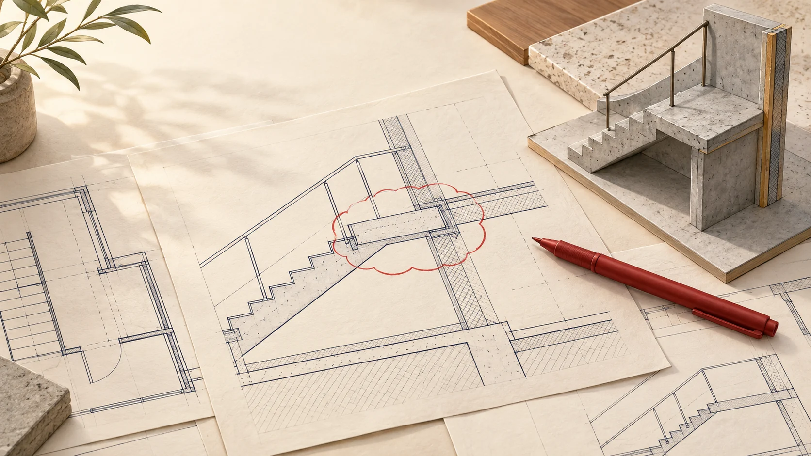

Draft from the fieldNeeds work
A field engineer's field guide
A better question.
A clearer answer.
Turn a drawing conflict into a request the design team can act on.

Your assignment
The dock pour is getting close.
A drawing and an approved equipment submittal disagree. Your job is to make that conflict easy to resolve.
Fictional project file
Medical office shell
Loading dock · Slab on grade
16thRequested response
19thPlanned placement
Dates are for this practice scenario. Allow the response period required by your project's process.
Leave with a repeatable method.
- InvestigateFind the conflict and identify the documents that matter.
- Make it answerableConnect one question to references, impact and a proposed resolution.
- Review before sendingRemove distractions, then check what the recipient still needs.
Optional audio introduces each lesson. Every activity works by touch, mouse or keyboard. Nothing is timed.
Demonstration only. Follow your contract documents and company RFI process. All project details are invented and are not for construction.
Know the boundary
A request for clarity.
An RFI records a specific question about the project information. It gives the right person enough context to respond.
Describe the gap, then ask the question.
A missing dimension, a conflicting detail or a mismatch between documents needs a clear ruling. First check that the information is not already available.
“Please confirm the required slab thickness and reinforcing at the loading dock pit.”
Write for the person reading it later.
Use your project's log, references and distribution process. A phone conversation may help, but record the clarification through the required channel.
Separate independently answerable issues and cross-reference related requests, subject to your project's rules.
The reviewer's desk
Find the gaps before they do.
Select a marked phrase to see what the recipient is still missing.
An answerable request
Give the answer somewhere to land.
Explore the four parts of this practice RFI.
Question
Make one decision possible.
Please confirm the required slab thickness and reinforcing beneath the loading dock pit.
Name the location and the decision. “Please advise” leaves the reader to invent the question.
Inspect the evidence
Open the file. Find the conflict.
Review each source, then attach the three relevant records to your practice RFI.
Build the request
A place for every useful detail.
Pick a fragment, then place it in the matching field. Leave distractions on the desk. Select a filled field to return its fragment.
On your desk
Select a fragment to pick it up.
Loading dock clarification
All four fields are empty.
Make the handoff
What happens on the other side?
Move through the review to see how the information supports a response.
At the design desk
They can open the right documents.
The structural detail and equipment submittal are identified together. The reviewer can see both requirements without sending you a request for references.
A vague request creates another search. A complete request makes the decision visible.
Try the method on a different issue
A duct does not fit above the corridor ceiling. Before drafting, gather the relevant drawing and section, the measured space available, and the affected work dates. Separate unrelated wall questions. Label any soffit change as a proposal for review, not an instruction.
Private practice in this tab. No submission, automatic grading or saving.
Back at your desk
Make the next RFI easier to answer.
Use this check before the request leaves your hands.
Before you send
- One clear questionIdentify the location and the decision you need.
- Exact referencesAttach both sources when documents disagree.
- Impact and requested dateTie the request to the actual work it affects.
- A reasoned proposalOffer it for review when appropriate, never as approval.
Your practice
Ready for a better handoff.
Read it once as the reviewer: could you answer without asking for something that is missing?
This demonstration is not a credential or project approval. Follow your own contract and company process.